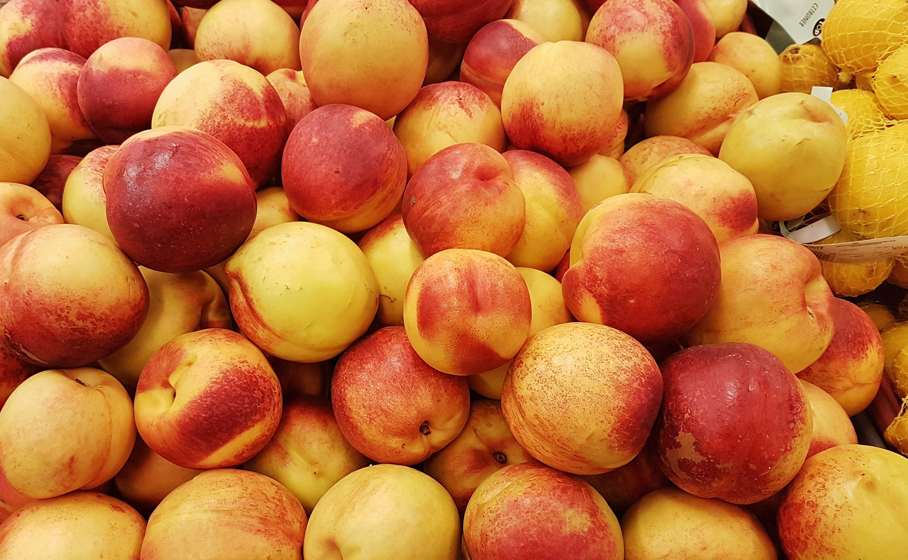
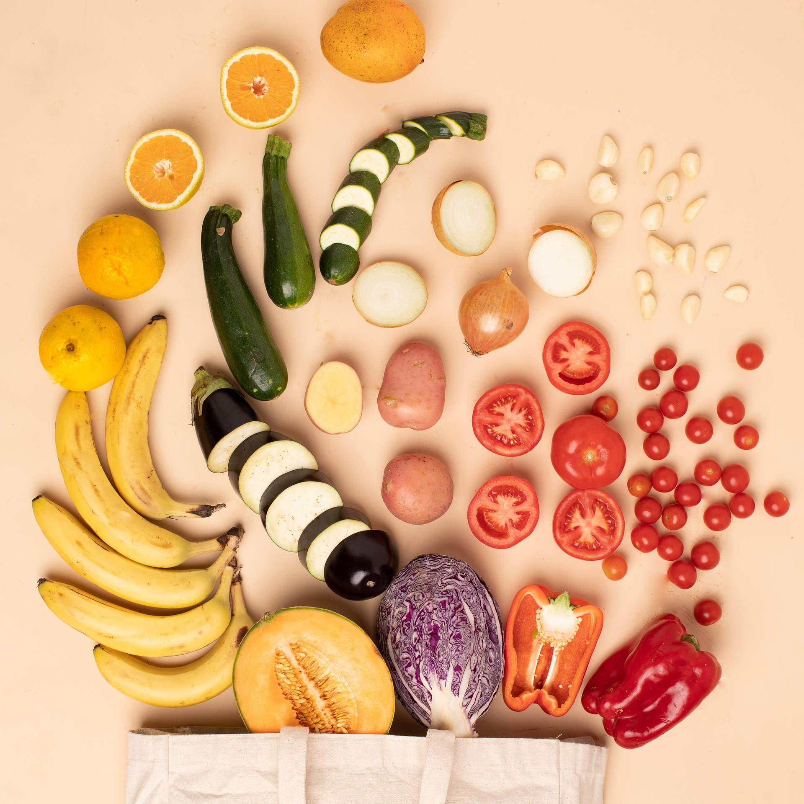

Introduction
Eating healthy is more than just a trend; it's a lifestyle choice that can improve your overall well-being. Whether you're looking to lose weight, boost your energy levels, or simply feel better, these ten healthy eating tips will guide you towards better nutrition and a healthier you.
1. Start Your Day with a Nutritious Breakfast
Breakfast is the most important meal of the day. Choose whole grains, fruits, and lean proteins to kickstart your metabolism and keep you energized throughout the morning.
2. Eat More Fruits and Vegetables
Aim to fill half your plate with fruits and vegetables at each meal. They are rich in vitamins, minerals, and fiber, which are essential for good health.
3. Stay Hydrated
Drinking enough water is crucial for your body's functions. Aim for at least 8 glasses a day, and consider hydrating foods like cucumbers and watermelons.

4. Choose Whole Grains
Whole grains like brown rice, quinoa, and whole wheat bread are packed with nutrients and fiber. They help you feel full longer and support digestive health.

5. Limit Added Sugars
Excessive sugar intake can lead to various health issues. Read labels carefully and try to limit foods with added sugars.

6. Control Portion Sizes
Be mindful of portion sizes to avoid overeating. Use smaller plates and listen to your body's hunger and fullness cues.
7. Snack Smart
Choose healthy snacks like nuts, seeds, and yogurt. These snacks provide essential nutrients and help keep your energy levels stable.

8. Cook at Home
Preparing meals at home allows you to control the ingredients and portion sizes. Experiment with new recipes and enjoy the process of cooking.
9. Plan Your Meals
Planning meals ahead of time can help you make healthier choices and save time during busy weeks. Create a weekly meal plan and stick to it.

10. Enjoy Your Food
Eating should be a pleasurable experience. Take time to savor your meals, and try to eat without distractions to fully enjoy the flavors and textures.
Conclusion
Incorporating these healthy eating tips into your daily routine can lead to significant improvements in your overall health and well-being. Start making small changes today, and you'll soon notice the positive impact on your life.